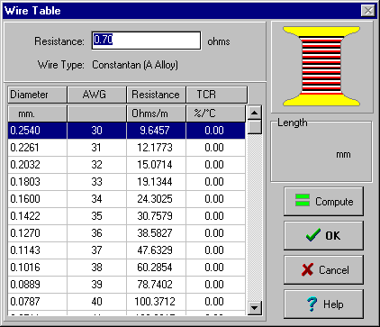

Step 7
Step 7Getting Started
Step 6
Wire Table
To demonstrate how to achieve the same 0.7 ohm compensation value in resistance wire, select the Wire Table RADIO BUTTON and press the Cut BUTTON to obtain the following Wire Table DIALOG.

The desired 0.70 ohm value should be displayed in the Resistance EDIT FIELD. Highlight a particular wire size by clicking on the desired size (AWG) and press the Compute BUTTON. With a 36 AWG constantan wire, the unsoldered length to achieve 0.70 ohms should be 0.7 inches.
Exit the Wire Table DIALOG by pressing OK BUTTON.
Exit the Initial Bridge Balance DIALOG by pressing the OK BUTTON.